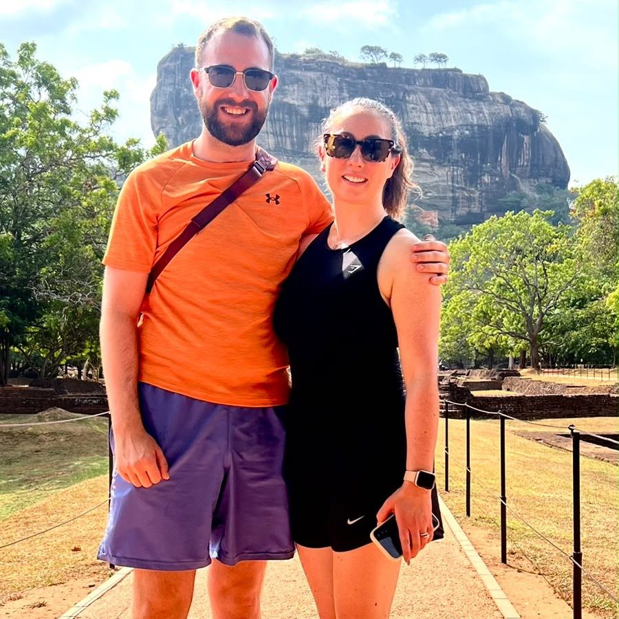
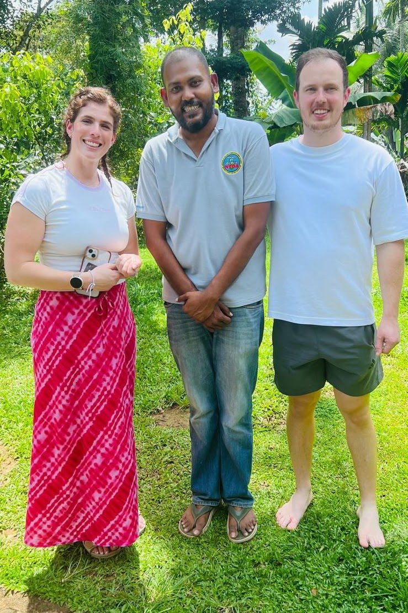
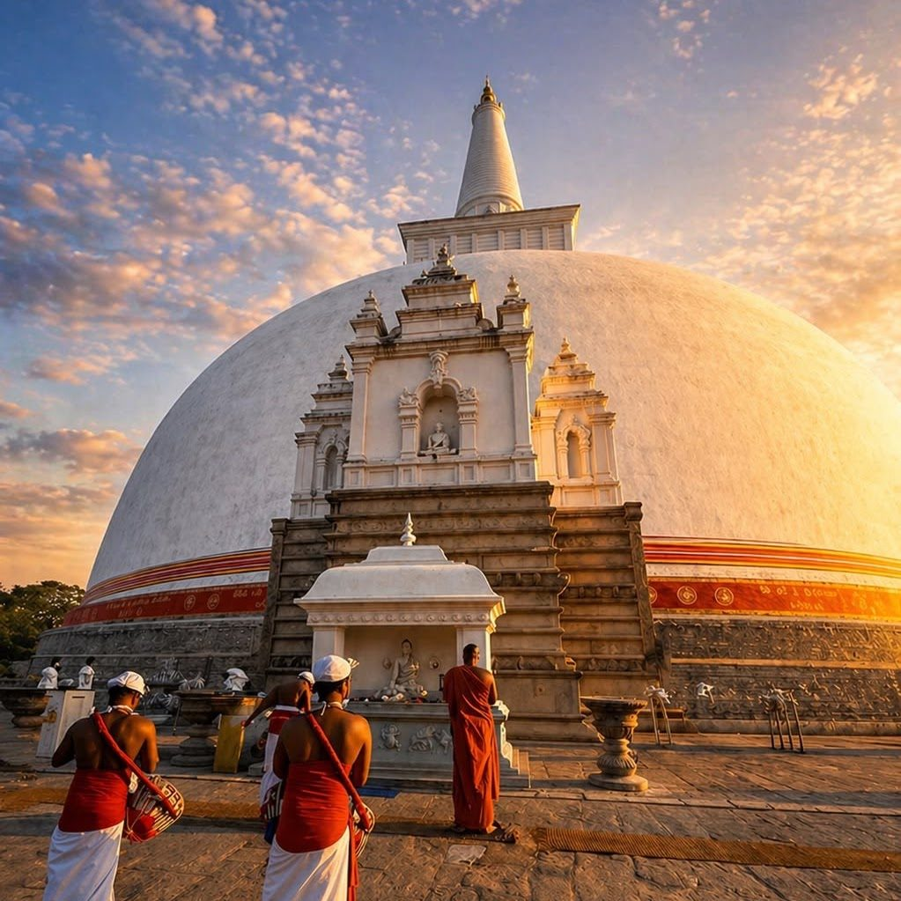
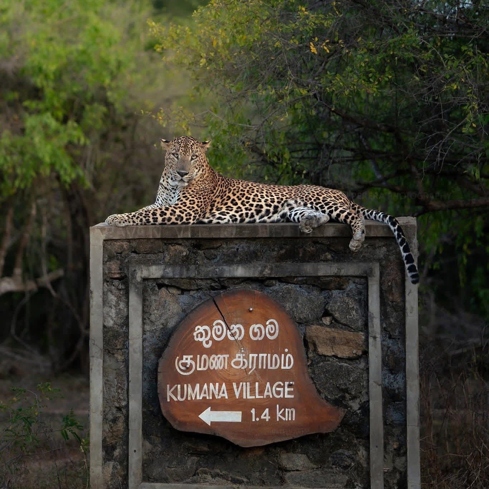
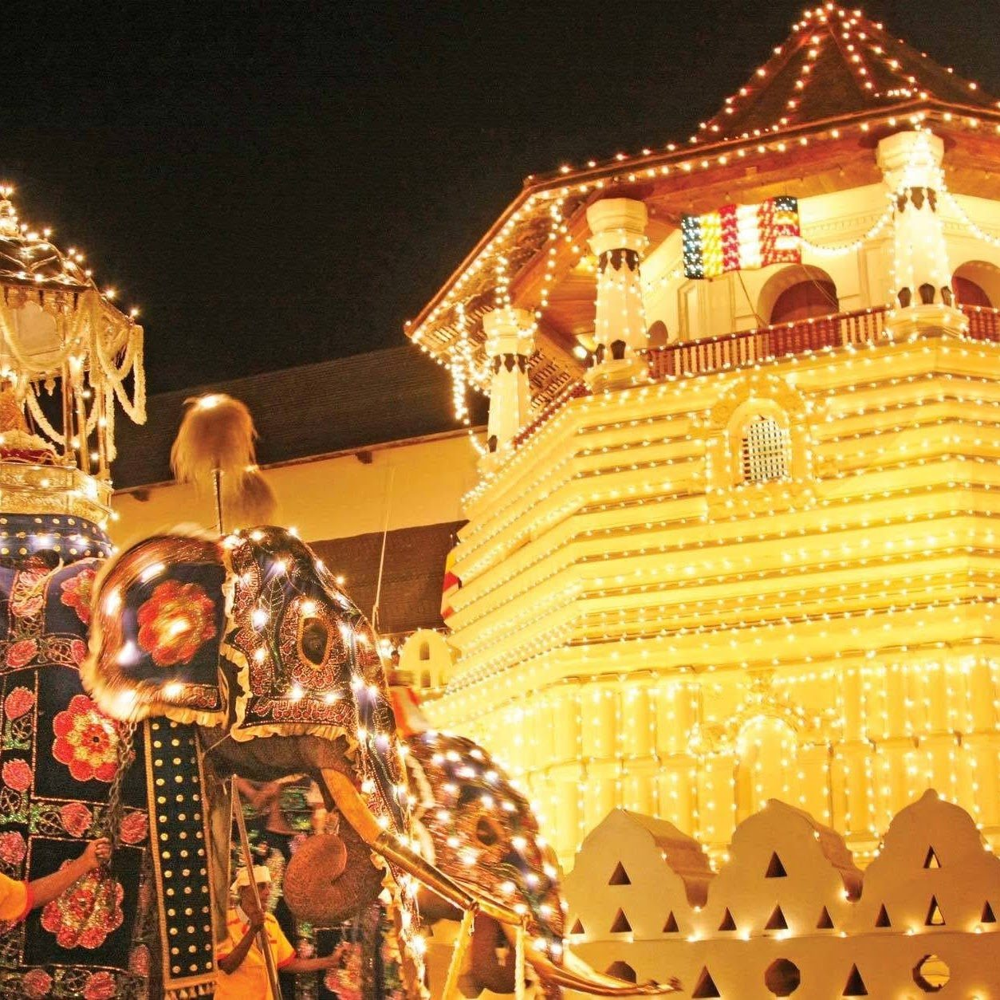
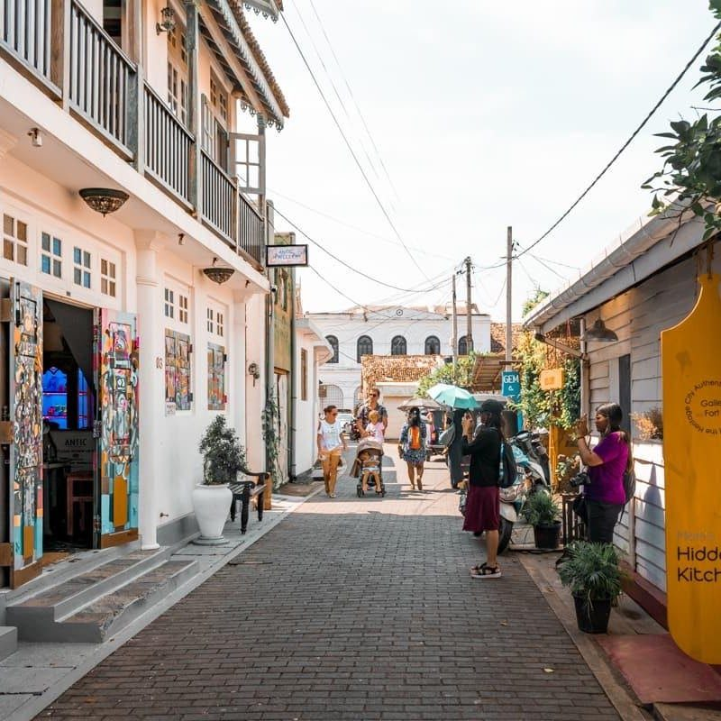

7 days
Cultural Triangle & Kandy
Sigiriya, Dambulla, Polonnaruwa and Anuradhapura, an elephant safari, then Kandy's Temple of the Tooth.
See the itinerary →
Temples, tea hills, leopards and quiet beaches, at your own pace, with your own English-speaking chauffeur guide from the moment you land.

I founded LuxSri Ceylon Travels to share the Sri Lanka I love with travellers who want more than a bus tour. I drive and guide every trip myself, so you always have someone local beside you who knows the roads, the history and the best place for lunch.
From the ancient cities and hill-country temples to wildlife safaris, train journeys and the beaches of the south, I plan each itinerary around you, in a comfortable air-conditioned vehicle, from airport pickup to departure.
My goal is simple: help you enjoy an authentic Sri Lankan experience and take home memories that last.
Journey Beyond Expectations.
Mix and match these on one private, unhurried route planned around you.

Ancient citiesAnuradhapura, Polonnaruwa and Sigiriya
Wildlife safarisLeopards and elephants in Yala and Kumana
Temples & cultureKandy and the Temple of the Tooth Lakes & riversBoat safaris with a local guide
Lakes & riversBoat safaris with a local guide

Colonial GalleWalk the Dutch fort by the sea Seamless arrivalMet at Colombo airport with your name
Seamless arrivalMet at Colombo airport with your nameSend your travel dates, group size and the places you'd like to see on WhatsApp.
Receive a free personalised itinerary and quote, then adjust it until it feels right.
Confirm, and Mahesh meets you at the airport with a name sign. The rest is your journey.
Each route can be shortened, extended or combined. Every trip includes your private chauffeur guide, an air-conditioned vehicle and airport transfers.
Sigiriya, Dambulla, Polonnaruwa and Anuradhapura, an elephant safari, then Kandy's Temple of the Tooth.
See the itinerary →Ancient cities, tea country, the famous train to Ella, a Yala leopard safari and the south coast.
See the itinerary →The whole island at an easy pace, from the sacred cities to an east coast safari and Galle Fort.
See the itinerary →Guest reviews from Google will appear here.
Mahesh Thilakasiri, the founder of LuxSri Ceylon Travels, is your English-speaking private chauffeur guide for the whole trip.
Yes. Airport pickup and drop-off at Colombo Bandaranaike International Airport (CMB) is included, and private transfers can go anywhere in Sri Lanka.
Yes. Every tour is planned around you. The sample routes can be shortened, extended or combined, and plans can change along the way.
It depends on your dates, route and group size. Send your details on WhatsApp and Mahesh will reply with a free personalised itinerary and quote.
Couples, families and small groups of friends who want to travel at their own pace in a private air-conditioned vehicle.
Tell us a little about your trip and send it by email or WhatsApp. Mahesh replies personally with a free plan and quote.